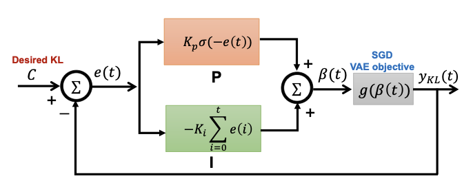

|
Yifei Yang
I am a fourth-year PhD (Sep. 2022 - ) student in Control Science and Engineering department at Zhejiang University. I belong to Robotics Lab, advised by Prof. Rong Xiong and Yue Wang.
I obtained my B.Eng (Sep. 2018 - Jun. 2022) in Control Science and Engineering from Zhejiang University with an honor degree at Chu Kochen Honor College.
My current research interests lie in robotic manipulation, robot learning, and embodied AI. My prior work also includes computer vision.
Email /
Google Scholar /
Github
|

|
Toward Embodiment Equivariant Vision-Language-Action Policy
Anzhe Chen,
Yifei Yang,
Zhenjie Zhu,
Kechun Xu,
Zhongxiang Zhou,
Rong Xiong,
Yue Wang
Under Review
|

|
Efficient Alignment of Unconditioned Action Prior for Language-conditioned Pick and Place in Clutter
Kechun Xu,
Xunlong Xia,
Kaixuan Wang,
Yifei Yang,
Yunxuan Mao,
Bing Deng,
Jieping Ye,
Rong Xiong,
Yue Wang
IEEE Transactions on Automation Science and Engineering (T-ASE 2025)
Conference on Robot Learning (CoRL 2025), GenPriors Workshop
|

|
Disambiguate Gripper State in Grasp-Based Tasks: Pseudo-Tactile as Feedback Enables Pure Simulation Learning
Yifei Yang,
Lu Chen,
Zherui Song,
Yenan Chen,
Wentao Sun,
Zhongxiang Zhou,
Rong Xiong,
Yue Wang
IEEE/RSJ International Conference on Intelligent Robots and Systems (IROS 2025)
|

|
DORec: Decomposed Object Reconstruction and Segmentation Utilizing 2D Self-Supervised Features
Jun Wu,
Sicheng Li,
Sihui Ji,
Yifei Yang,
Yue Wang,
Rong Xiong,
Yiyi Liao
IEEE Robotics and Automation Letters (RA-L 2024)
|

|
ν-DBA: Neural Implicit Dense Bundle Adjustment Enables Image-Only Driving Scene Reconstruction
Yunxuan Mao,
Bingqi Shen,
Yifei Yang,
Kai Wang,
Rong Xiong,
Yiyi Liao,
Yue Wang
IEEE/RSJ International Conference on Intelligent Robots and Systems (IROS 2024)
|

|
Class Semantics Modulation for Open-Set Instance Segmentation
Yifei Yang,
Zhongxiang Zhou,
Jun Wu,
Yue Wang,
Rong Xiong
IEEE Robotics and Automation Letters (RA-L 2024)
|

|
Open-Set Object Detection Using Classification-free Object Proposal and Instance-level Contrastive Learning
Zhongxiang Zhou
Yifei Yang,
Yue Wang,
Rong Xiong
IEEE Robotics and Automation Letters (RA-L 2023)
|

|
UrbanGIRAFFE: Representing Urban Scenes as Compositional Generative Neural Feature Fields
Yuanbo Yang,
Yifei Yang,
Hanlei Guo,
Rong Xiong,
Yue Wang,
Yiyi Liao
Proceedings of the IEEE/CVF International Conference on Computer Vision (ICCV 2023)
|
|

|
Rethinking Controllable Variational Autoencoders
Huajie Shao1*† , Yifei Yang2† , Haohong Lin3† , Longzhong Lin2, Yizhuo Chen2, Qinmin Yang2, Han Zhao
Huajie Shao*,
Yifei Yang*,
Haohong Lin*,
Longzhong Lin,
Yizhuo Chen,
Qinmin Yang,
Han Zhao
Proceedings of the IEEE/CVF Conference on Computer Vision and Pattern Recognition (CVPR 2022)
pdf
|
- Reviewer of RA-L, ICRA, IROS, CVPR.
|